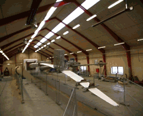
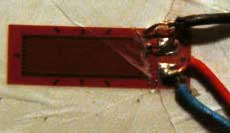
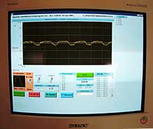

Video
© 1999 Soren Krohn
Click on image to restart video

Testing
Wind Turbine Rotor Blades
Fatigue
Testing of Rotor Blades
 The
video to the left (122 K) shows how a 32 m rotor blade is fatigue
tested by being bent cyclically in a flapwise direction for 5
million full cycles. A full flapwise test thus takes about three
months.
The
video to the left (122 K) shows how a 32 m rotor blade is fatigue
tested by being bent cyclically in a flapwise direction for 5
million full cycles. A full flapwise test thus takes about three
months.
 If you look closely to the left you can see
another (shorter) rotor blade being bent cyclically in an edgewise
(chordwise) direction.
If you look closely to the left you can see
another (shorter) rotor blade being bent cyclically in an edgewise
(chordwise) direction.
 In both cases the blades are bent using a
cycle close to the natural frequency of the blade.
In both cases the blades are bent using a
cycle close to the natural frequency of the blade.
 The natural frequency is the frequency with
which the blade will oscillate back and forth, if you push it
once in a certain direction and let go. The natural frequencies
are different in the flapwise and edgewise direction: The blade
tends to be much stiffer in the edgewise direction, thus it has
a higher natural frequency for edgewise bending.
The natural frequency is the frequency with
which the blade will oscillate back and forth, if you push it
once in a certain direction and let go. The natural frequencies
are different in the flapwise and edgewise direction: The blade
tends to be much stiffer in the edgewise direction, thus it has
a higher natural frequency for edgewise bending.
 Each blade is set in motion by an electric
motor mounted on the blade which swings a weight up and down.
The foundations which carry the blade socket have to be very
solid: The foundation for the large blade socket consists of
2,000 tonnes of concrete.
Each blade is set in motion by an electric
motor mounted on the blade which swings a weight up and down.
The foundations which carry the blade socket have to be very
solid: The foundation for the large blade socket consists of
2,000 tonnes of concrete.
 This video was shot at the rotor blade test
facility of the Risoe National Laboratory Sparkær Test
Centre in Jutland, Denmark. (Type approval requirements for rotor
blades are very strict in Denmark, requiring physical testing
of rotor blades for both fatigue properties (fatigue testing)
and strength properties (static testing). Other countries usually
have less stringent requirements for type approval of rotor blades).
This video was shot at the rotor blade test
facility of the Risoe National Laboratory Sparkær Test
Centre in Jutland, Denmark. (Type approval requirements for rotor
blades are very strict in Denmark, requiring physical testing
of rotor blades for both fatigue properties (fatigue testing)
and strength properties (static testing). Other countries usually
have less stringent requirements for type approval of rotor blades).
Rotor
Blade Materials
Rotor blades are usually made using a matrix of fibre
glass mats which are impregnated with a material such as polyester
(GRP = Glass fibre reinforced polyester). The polyester is hardened
after it has impregnated the fibre glass. Epoxy may be used instead
of polyester. Likewise the basic matrix may be made wholly or
partially from carbon fibre, which is a lighter, but costlier
material with high strength. Wood-epoxy laminates are also being
used for large rotor blades.
The
Purpose of Testing Rotor Blades
The purpose of rotor blade testing is to verify that laminations
in the blade are, safe, i.e. that the layers of the rotor blade
do not separate (delamination). Also, the test verifies that
the fibres do not break under repeated stress.
Photograph
© 1999 Soren Krohn
Measuring
Strains
 Strain gauges, (i.e. flat electrical resistors
which are glued on to the surface of the rotor blades being tested),
are used to measure very accurately the bending and stretching
of the rotor blades.
Strain gauges, (i.e. flat electrical resistors
which are glued on to the surface of the rotor blades being tested),
are used to measure very accurately the bending and stretching
of the rotor blades.
Photograph
© 1999 Soren Krohn
Monitoring Fatigue Testing

Infrared
Inspection (Thermography)
Infrared cameras are used to reveal local build-up of heat in
the blade. This may either indicate an area with structural
dampening, i.e. an area where the blade designer has deliberately
laid out fibres which convert the bending energy into heat in
order to stabilise the blade, or it may indicate an area of delamination
or an area which is moving toward the breaking point for the
fibres.
Modal
Forms of Rotor Blade Vibrations
From the year 2000 blade testing (in Denmark) also includes a
verification of the different modal forms of vibration
of each blade. This is done using a special type of equipment
which excites the blade vibrations at different frequencies and
in different directions.
 Different modal forms of oscillation are
also known when building musical instruments: A string on a violin
may oscillate with is basic tone, i.e. the centre of the
string moving up and down, but it will usually also oscillate
with the first overtone or first harmonic, with two centres
of oscillation located at a distance of 1/4 from each end of
the string, moving at twice the frequency of the basic tone or
natural frequency.
Different modal forms of oscillation are
also known when building musical instruments: A string on a violin
may oscillate with is basic tone, i.e. the centre of the
string moving up and down, but it will usually also oscillate
with the first overtone or first harmonic, with two centres
of oscillation located at a distance of 1/4 from each end of
the string, moving at twice the frequency of the basic tone or
natural frequency.
 The reason why manufacturers of wind turbines
are interested in studying and verifying the various forms of
vibration frequencies in rotor blades, is that they have to make
sure that the turbine on which the blade is to be mounted does
not have some of the same natural frequencies as the rotor blade.
Otherwise, a resonance may occur in the whole structure
of the turbine, leading to undampened vibrations which
may eventually wreck the whole wind turbine. We will return to
this issue on the page on structural
dynamics in the design section later in this guided tour.
The reason why manufacturers of wind turbines
are interested in studying and verifying the various forms of
vibration frequencies in rotor blades, is that they have to make
sure that the turbine on which the blade is to be mounted does
not have some of the same natural frequencies as the rotor blade.
Otherwise, a resonance may occur in the whole structure
of the turbine, leading to undampened vibrations which
may eventually wreck the whole wind turbine. We will return to
this issue on the page on structural
dynamics in the design section later in this guided tour.
Static
Testing of Rotor Blades
Rotor blades are also tested for strength (and thus
their ability to withstand extreme loads) by being bent once
with a very large force. This test is made after the blades has
been subject to fatigue testing, in order to verify the strength
for a blade which has been in operation for a substantial amount
of time.

|
Back | Home
| Forward |
© Copyright 2000 Soren Krohn
Updated 16 August 2000
http://www.windpower.org/tour/manu/bladtest.htm